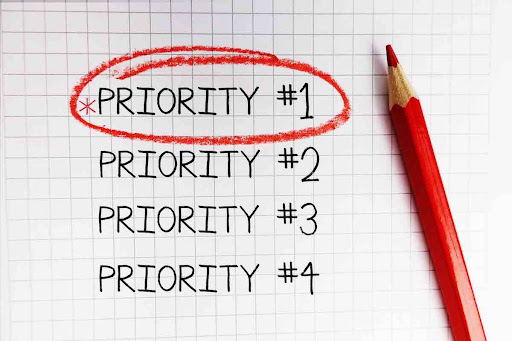
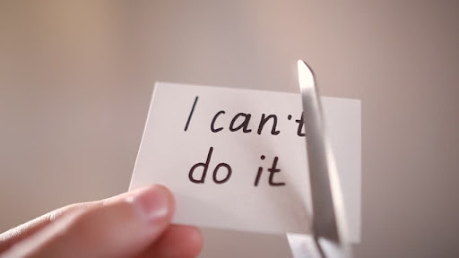

Being a student rather than a pupil
Being a student means that everything you know is completely different in every possible sense. Everything, almost everything, depends only on you. So, the responsibility for your learning lay in your hands. And the past few years because of coronavirus and lockdowns the lectures and attendance have been on zoom to decrease the infection of coronavirus. This is how the first semester begins. Being in a zoom meeting with four hundred people. A university professor who may not know your name at all. Every moment a person asks himself, "What am I really doing here?" or “Did I make the right decision when I chose to go to university?”. Faced with such questions it can be really challenging for a student to whom everything is new. For those of us who came straight from high school, the entire responsibility for the curriculum rested solely with the teacher, and the only thing we did was follow their teaching. But there is no such thing when it comes to university. Especially for those of us who are students of information technology. I can honestly say that courses are not forty percent of what is expected of a student in the exam! The level of supervision needed by students is generally lower than pupils as they are older and considered capable of managing themselves without someone else intervening.
Teamwork
In the field of information technology, I can say that it is almost impossible to complete almost any of the courses without having a team. In our field of study, having a good team with responsible people will make most of the challenges by far a lot easier. By working together and managing workload together it relieves a lot of the stress that most students are under during their studies. And by collaborating on a task we are able to learn from each other.
Prioritization
One of the most important challenges for a student is to plan the lessons correctly. In university, the number of students are usually a lot higher than the one in the regular classroom in high school, thus it is a lot harder for a professor to get back to each student. So, the student should make the most of the lessons. It will take a lot of time to understand the content correctly, but the challenge is that you do not have just one subject. Therefore, proper, and efficient planning should be considered until the exams arrive. It is essential for most students to have a plan in regards to their studies, especially when the person you rely on the most is yourself. Since the most significant difference between high school and university is the amount of work, motivation and independence, it is considered highly important to find a balance between work, studies, and social activities. However, this is quite challenging and most students also live on their own, meaning they have to take care of most things in their lives now. Luckily, there are a lot of different ways to manage the workload.
Purpose and motivation
The corona pandemic has played a major role in when it comes to the students' motivation throughout the past years. We went from socially active students to being stuck at home in front of a screen for most of the semester. Lectures, group-work and all of our socialization was dependent on our technological devices. This has had a tremendous effect on the mentality of the students across the world and has led to a relative impact on mental health issues. Trying to maintain a high level of motivation when most of your lectures are on zoom can be quite challenging. Working on the same project over a long period of time can be tiresome or even a little boring. Or if you find yourself with a lot of work ahead of you it can be hard to gather motivation as stated before, the work mostly relies on you and your own efforts.